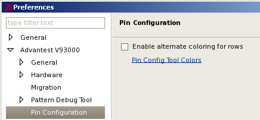
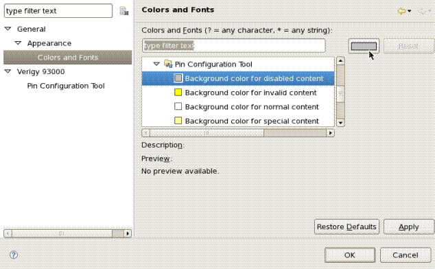

Pin Configuration Tool preferences page
You can change the following preferences on the preference page.

- Select Enable alternate coloring for rows to show the rows of the pin configuration tool in alternate colors.
- Click Pin Config Tool Colors to open the preferences page , where you can define the colors.

- On the list, open .
- Select the background color for content depending on its function within the pin configuration.
- Click the color button in the upper right corner (left beside the Reset button) to open the color chooser window.
- Select a color.
- On the Preferences window click Apply.
If have the pin configuration tool opened in the background you can see immediately your changes.
Functional changes
- Introduced in SmarTest 6.5.4